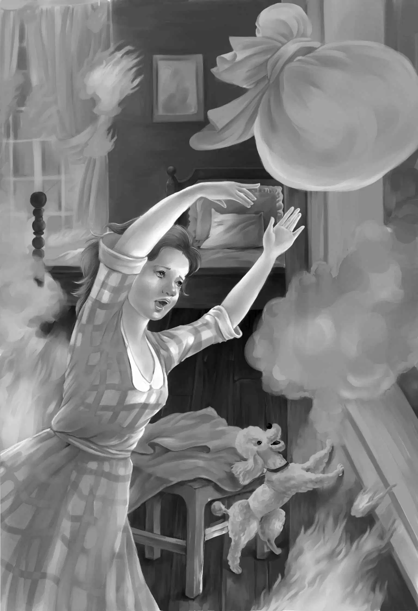

The children slept soundly. They all woke up once to hear a loud,strange bell ringing. But they thought it was midnight,so they all went to sleep again. When they came down in the morning,Sam and Maggie were talking about a fire.
"What fire?" asked Henry.
"Didn't you hear the firebells ringing and ringing in the night?" asked Sam. "Here comes the paper boy. The news will be in the paper. "
Sam took the paper. It was full of pictures. Benny looked over his shoulder. "It's Mike's house!" yelled Benny at the top of his voice.
"The paper says that it was the Wood's house that had burned to the ground. "
"Let me see the paper,Benny," Jessie cried. "I can read faster. "
"I can read fast enough," said Benny excitedly. "See that picture? It's Mike all right. "
"I'm afraid it is," said Jessie,trying to read. "That lovely new,pink house,and the washing machine and electric stove!"
"No lives were lost," read Benny. "Not even the dog. Their big dog,Spotty,who slept in the cellar barked and gave the alarm. The fire had started in the cellar,and by the time the fire engine came,the whole house was burning. The fire seemed to start on all four sides of the house. "
"Nothing was saved except clothing and bedding. When Mrs. Wood saw that the house could not be saved,she put some sheets on the floor,threw all the clothes from bureau drawers and closets on the sheets,tied them up,and threw them out of the window. "
"Well,wasn't that smart?"said Jessie. "That costs the most of anything,doesn't it,Aunt Jane? The family clothes and bedding?"
"Yes,my dear," replied her aunt. "I wonder what the Wood family will do now. "
"I have to go right down there," said Benny. "I have to see Mike. "
"Wait a minute,Benny," said Aunt Jane. "You must eat your breakfast,first. When you get down there,you won't come back for a long time. I know you!"

Benny knew that this was true,so he sat down and tried to eat. They all tried to eat,but everyone was thinking about the fire.
"Mike could come here for a few days," said Aunt Jane,"if he has no other place to go. "
"Oh,Aunt Jane,thank you!"said Jessie. "You are very kind. But I don't think you want Mike. He would upset everything. "
"I don't mind being upset," said Aunt Jane. "Benny and Mike would be something amusing to watch. "
"You can say that again!"said Henry,laughing.
"I ate an egg," said Benny. "Can I go now?"
"Yes,go along. I know you can hardly wait to get down to the fire," said Aunt Jane.
The children ran all the way. They soon saw a big crowd of people who had come to see the fire. The little pink house was gone. Smoke was still rising from the burned wood,and it was still very hot.
"Hi,Ben!" called a voice. It was Mike. He came running over to Benny. He cried,"That was our house that burned,Ben. We all got out,and it was Spotty saved us. "
"What are you going to do,Mike?" asked Henry. "Where is your mother?"
"She's right over there," said Mike pointing. "She and my brother Pat can sleep next door in the blue house,but I am going to stay with Mr. Carter. "
"Mr. Carter!" cried Jessie. "What Mr. Carter? Do you mean Mr. John Carter?"
"I guess so," said Mike. "That's his name anyway. Do you know him? He's nice and very friendly. "
"He works for Grandfather," said Jessie. "We met him last summer,but we didn't know he was still here. Where does he live?"
"In the green house right near the mine. He has lots of rooms he don't use. "
"Doesn't," said Benny.
"Now don't you go teaching me,Ben!" said Mike.
"Where is Mr. Carter,now?" asked Violet just in time to stop a fight.
"Right over beside my mother," said Mike. "Come on,they are looking at us. "
"Well,well,Mr. Carter!" cried Henry. "We are so glad to see you again. You always seem to pop up when there is trouble. "
"I try to," said John Carter with a twinkle in his eye. "Hello,Jessie! And Violet. Benny is still his same old self. "
"What will happen to Mike's family?" asked Henry.
"All these houses belong to the Uranium Company. So when the place cools off,the pink house will be built again," replied the man.
"How about the things inside? The washing machine?" asked Jessie.
"I don't know,but insurance will take care of some things later. "
"Aunt Jane said Mike could come up to our house,"said Violet.
"Oh,did she indeed!"said Mr. Carter,laughing. "You'll have a lively time! Don't you want me,too?"
"You would be a big help," said Jessie,smiling.
"You can have a whole room,Mike,if you come to Aunt Jane's," said Benny. "You'd better ask your mother if you can come. "
"Yes,I'm willing,and thankful,too,"said Mrs. Wood. "But tell Miss Alden to send Mike back if he gets too much for her. "
Then Benny asked suddenly,"Mike! Have you had anything to eat?"
"No!" shouted Mike. "It all burned up. I didn't have any milk,or any oatmeal,or any eggs—"
"Come on,Mike!" shouted Benny. "I could eat another egg myself. Let's all go to the restaurant!"
Mr. Carter looked at Jessie and laughed. He said,"I wonder what's the matter with me? I never even thought of breakfast!And Mrs. Wood,you must be starved. We'll all go to the restaurant and have breakfast. "
"We follow Benny as usual," said Mrs. Wood smiling. "He has the ideas. "